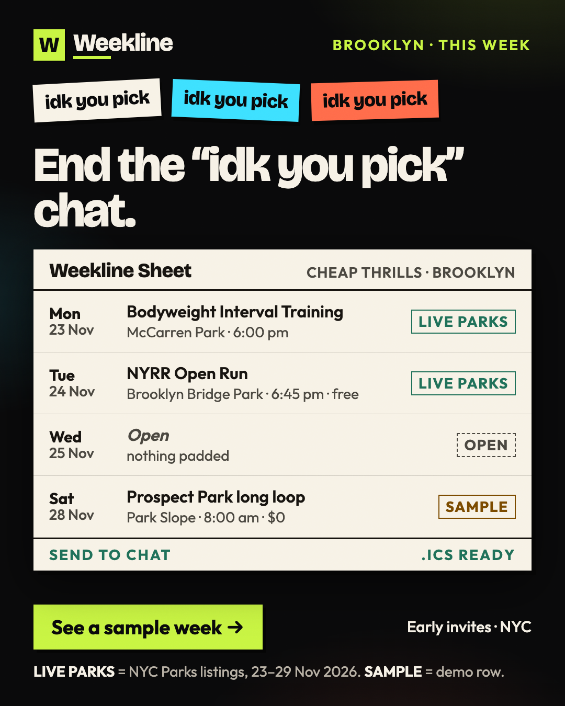

Meta ads · Instagram feed · 4:5
Six frames. One Sheet each.
Three angles, two frames each. Every frame shows the week Sheet first. Drafts: nothing has run yet.

Arrow keys work too.
- Angle
- Primary text
- Headline
- Meta button
- Download
- PNG · 1080×1350
The 2-week test
Budget
$240 total: $80 per angle, about $5.70 a day each, 14 days. Brooklyn + Manhattan, ages 25–40. Organic posts: $0.
Measure
CTR, invite-request rate on the landing page, cost per request. Then, for invited people: week built, lock / .ics, share, back in week 2.
Rules up front
Any ad under 0.4% CTR after 1,000 impressions: pause. Any creative without a Sheet in the first 3 seconds: kill.
Keep
Request rate ≥ 10% or cost per request ≤ $3.
Rework
Request rate 4–10% or cost $3–8.
Kill
Under 4%, over $8 per request, or CTR under 0.6% after 1,500 impressions.
- Bets: Pain for reach, Gain for cost per request. Identity runs on fitness only (the one Seeking goal with live supply).
- Thresholds and budget are the plan’s own assumptions, not industry facts. Weekline has no ad history, users or waitlist yet.
- LIVE PARKS rows are real NYC Parks listings for 23–29 Nov 2026, from the public NYC Open Data feed (pulled 21 Nov 2026). Re-pull the week the ads run. SAMPLE rows are the app’s demo rows. “Free” appears only where the listing says free.
- Owner presses go. Nothing here posts or spends on its own.
- Photos: real NYC sunsets from Wikimedia Commons (CC BY-SA 4.0 and CC BY 2.0); each frame prints its photographer and licence.